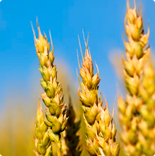
Форсунки для зерновых
Форсунки для подсолнечника
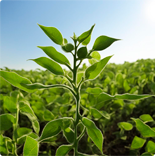
Форсунки для сои

Форсунки для кукурузы
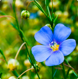
Форсунки для льна

Форсунки для рапса
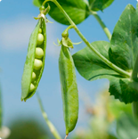
Форсунки для гороха
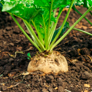
Форсунки для сахарной свёклы
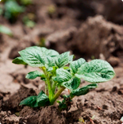
Форсунки для картофеля
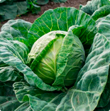
Форсунки для капусты

Форсунки для лука
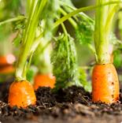
Форсунки для моркови
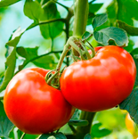
Форсунки для томатов
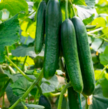
Форсунки для огурцов
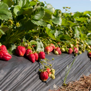
Форсунки для ягод и кустарников
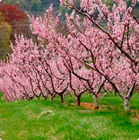
Форсунки для фруктовых садов